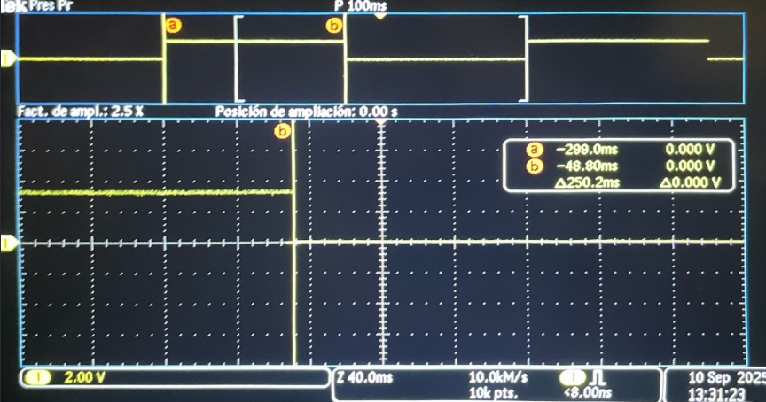
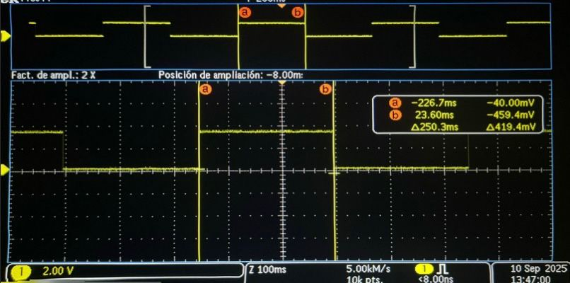

Comparativa de codigos optimizados
Plantilla genérica para documentar proyectos académicos o de ingeniería.
Copia y adapta las secciones según tu necesidad.
1) Resumen
- Nombre del proyecto: Blink con temporizador (alto y bajo nivel) en Raspberry Pi Pico
- Autor: Antonio Martinez
- Curso / Asignatura: Sistemas Embebidos
- Fecha: 10/09/2025
- Descripción breve: Implementación y comparación de dos enfoques para parpadear un LED en la Raspberry Pi Pico: (1) SDK de alto nivel con
add_repeating_timer_msy (2) bajo nivel programando ALARM0 e IRQ del periférico TIMER.
Consejo
Mantén este resumen corto (máx. 5 líneas). Lo demás va en secciones específicas.
2) Objetivos
- General: Evaluar precisión, simplicidad y control de dos métodos de temporización (alto vs. bajo nivel) para el parpadeo de un LED en la Pico.
- Específicos:
- Implementar un parpadeo con timer de alto nivel (SDK).
- Implementar un parpadeo con timer de sistema + ALARM0 + IRQ.
- Comparar periodo efectivo y estabilidad de ambos enfoques mediante mediciones/observaciones.
- Documentar configuración, código y resultados.
3) Alcance y Exclusiones
- Incluye:
- Código C para Pico (RP2040/RP2350).
- Explicaciones de configuración GPIO y temporizadores.
- Fórmulas de periodo/frecuencia y tabla de parámetros.
-
Secciones para insertar capturas/mediciones.
-
No incluye:
- Medidas con instrumentos específicos (osciloscopio/analizador lógico) (pueden anexarse como evidencia).
- Optimización avanzada de latencia fuera del alcance didáctico.
4) Requisitos
Software
- Pico SDK (v1.x–v2.x)
- CMake (≥ 3.13)
- Toolchain GCC ARM (ej. arm-none-eabi-gcc)
- picotool (opcional, para flasheo)
- Git
Hardware - Raspberry Pi Pico / Pico 2 (RP2040/RP2350) - LED en GP15 (si tu placa no trae LED en ese pin) + resistencia (220–1kΩ) - Osiloscopio
Conocimientos previos - C básico - Electrónica digital básica (GPIO, resistencias) - Flujo de compilación con Pico SDK
5) Codigo 1 y resultados
// Blink con timer (SDK alto nivel): cambia BLINK_MS para ajustar
#include "pico/stdlib.h"
#include "pico/time.h"
#define LED_PIN 15 // <-- usar GPIO 15 (GP15)
static const int BLINK_MS = 250;
bool blink_cb(repeating_timer_t *t) {
static bool on = false;
gpio_put(LED_PIN, on = !on);
return true;
}
int main() {
stdio_init_all();
gpio_init(LED_PIN);
gpio_set_dir(LED_PIN, GPIO_OUT); // mejor usar GPIO_OUT que true
repeating_timer_t timer;
add_repeating_timer_ms(BLINK_MS, blink_cb, NULL, &timer);
while (true) {
tight_loop_contents();
}
}
Resultados 
6) Codigo 2 y resultados
// Blink con timer de sistema (bajo nivel): programando ALARM0 e IRQ
#include "pico/stdlib.h"
#include "hardware/irq.h"
#include "hardware/structs/timer.h"
#define LED_PIN 15
#define ALARM_NUM 0 // usaremos la alarma 0
// Calcula el número de IRQ para esa alarma
#define ALARM_IRQ timer_hardware_alarm_get_irq_num(timer_hw, ALARM_NUM)
static volatile uint32_t next_deadline; // próximo instante (en us) en 32 bits bajos
// Por defecto el timer cuenta µs (no cambiamos la fuente).
static volatile uint32_t intervalo_us = 250000u; // periodo en microsegundos
void on_alarm_irq(void) {
// 1) Limpiar el flag de la alarma
hw_clear_bits(&timer_hw->intr, 1u << ALARM_NUM);
// 2) Hacer el trabajo toggle LED
sio_hw->gpio_togl = 1u << LED_PIN;
// 3) Rearmar la siguiente alarma con "deadline acumulativo"
next_deadline += intervalo_us;
timer_hw->alarm[ALARM_NUM] = next_deadline;
}
int main() {
stdio_init_all();
// Configura el LED
gpio_init(LED_PIN);
gpio_set_dir(LED_PIN, true);
// "now" = 32 bits bajos del contador (tiempo en µs)
uint32_t now_us = timer_hw->timerawl; // lectura 32b (low) del contador
next_deadline = now_us + intervalo_us; // primer deadline
// Programa la alarma
timer_hw->alarm[ALARM_NUM] = next_deadline;
// Crea un handler exclusivo para ligar el callback a la IRQ de la alarma
irq_set_exclusive_handler(ALARM_IRQ, on_alarm_irq);
// Habilita dentro del periférico TIMER la fuente de interrupción para la alarma ALARM_NUM inte = interrupt enable
hw_set_bits(&timer_hw->inte, 1u << ALARM_NUM);
//Habilita la IRQ en el NVIC (controlador de interrupciones del núcleo)
irq_set_enabled(ALARM_IRQ, true);
while (true) {
// Mantén el bucle principal libre; lo pesado va aquí, no en la ISR
tight_loop_contents();
}
}
Resultados 
7) Comparativa y conclusiones
Resumen de la medición. Con ambos programas configurados para conmutar cada 250 ms, se observó una diferencia de 0.1 ms a favor del enfoque de bajo nivel (ALARM0 + IRQ), es decir, el de bajo nivel fue ligeramente más rápido.
| Método | (T_{\text{toggle}}) medido | Desviación vs 250 ms | Comentario breve |
|---|---|---|---|
| Alto nivel (repeating_timer) | 250.1 ms | +0.1 ms | Despacho mediante callback del SDK |
| Bajo nivel (ALARM0 + IRQ) | 250.0 ms | 0.0 ms | Programación directa de alarma + sio_hw->gpio_togl |
Interpretación.
- El alto nivel introduce una pequeña latencia por la capa de abstracción (gestión del callback, comprobaciones internas), lo que explica el retardo adicional de ~0.1 ms.
- El bajo nivel programa el “deadline” en el temporizador de hardware y conmuta el pin vía SIO (sio_hw->gpio_togl) dentro de la ISR, reduciendo el overhead y la deriva acumulada.
Conclusiones prácticas. - Para aplicaciones didácticas o de prototipado, el enfoque alto nivel es suficiente y más legible. - Para requisitos de precisión temporal o ventanas largas (minimizando deriva/jitter), el enfoque bajo nivel es preferible. - Aunque la diferencia medida (0.1 ms) es pequeña, confirma que la ruta ALARM0 + IRQ ofrece mejor control temporal con el mismo parámetro nominal.
Notas de medición. - Asegurar condiciones comparables (misma alimentación, misma carga en el pin y entorno) y, si es posible, repetir varias veces y reportar promedio y desviación. - El contador de 32 bits del TIMER “envuelve” ~cada 71.6 min; el uso de deadline acumulativo mantiene el ritmo al pasar por el wrap-around.